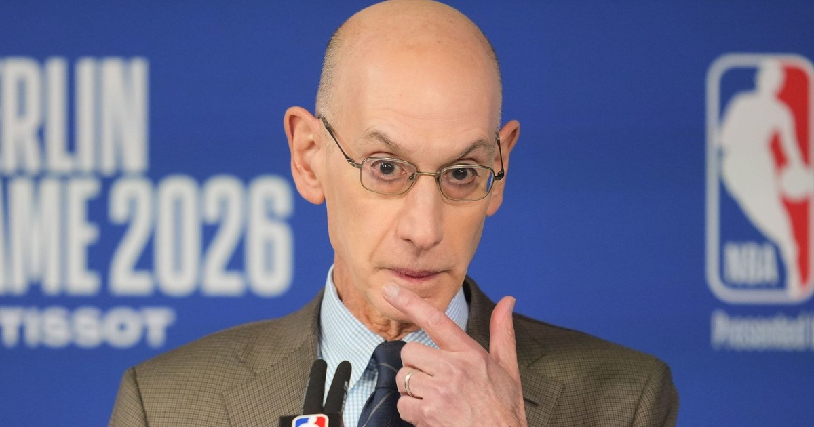

The NBA just put $11 billion behind its European league — new arenas, new districts, and a launch next fall
The NBA unveiled a €10 billion arena initiative on Wednesday to back the launch of its new European league — a fund for building and renovating venues across the continent, backed by some of the biggest investment firms in the world.

Disclosure: this post contains affiliate links. I earn a commission on qualifying purchases.
The announcement
The NBA's European league took its biggest step yet toward becoming real on Wednesday — with money attached.
The league announced a plan to raise at least €10 billion, nearly $11 billion, to develop and renovate basketball arenas across Europe, plus the sports and entertainment districts around them. A group of global investment firms is backing the initiative, including Apollo Sports Capital, Ares Management, Arctos, Blackstone, HPS Investment Partners, J.P. Morgan, Sixth Street and Stonepeak.
The money is aimed at the new league the NBA is building with FIBA, which the two sides have said will begin play next fall.
"We've seen firsthand how state-of-the-art arenas and the related developments around them can transform basketball teams and their surrounding communities," NBA Commissioner Adam Silver said in a statement announcing the initiative. "As we prepare to launch a new league in Europe alongside FIBA, we see a significant opportunity to help clubs develop facilities which both build on the unique traditions that define European basketball while also elevating the fan experience and attracting many more live events."
What the fund actually does
This is not the NBA writing a check for its own teams. The investors will partner with participating clubs, ownership groups, local developers and other service providers to build new arenas and renovate existing ones — and, where it makes sense, the mixed-use districts around them, with housing, workplaces, restaurants, retail and public spaces.
The initiative is entirely separate from the team investment process — the separate track where the league is picking owners and franchises for NBA Europe. The arena fund is meant to hand prospective clubs long-term capital and venue expertise, so the buildings are ready when the league is.
The plan calls for 16 teams: 12 permanent franchises and four that qualify each year through FIBA's Basketball Champions League or a qualifying tournament. Deputy Commissioner Mark Tatum has said the initial franchises are expected to be formalized by the first quarter of 2027.
Where the league is headed
The target cities are no secret, even if none has been formally confirmed as a selection. The list the league has been working from includes London and Manchester in Britain, Paris and Lyon in France, Madrid and Barcelona in Spain, Rome and Milan in Italy, Munich and Berlin in Germany, Athens in Greece and Istanbul in Turkey.
The NBA and FIBA have been talking about this league for years — the plan to officially move forward was announced in March 2025 — and the pitch is that European basketball's commercial and competitive potential is nowhere near realized. The league's argument is that the arena infrastructure is the bottleneck: Europe does not have many venues like the ones NBA teams play in, and the league believes clubs are leaving money on the table.
Not everyone is sold. Some investors have raised concerns about franchise fees that could reach up to $1 billion, and a majority of the 12 licensed EuroLeague clubs rejected an NBA proposal in October. The EuroLeague remains the elephant in the room — the established competition whose clubs the NBA needs, or needs to work around, to make its league credible.
Why arenas, why now
Silver has made the arena argument before: new world-class venues drive economic growth in the cities where they sit, through ticket sales, jobs, and the revitalization of the surrounding area. Critics of that claim note that multiple studies suggest it is more a redistribution of spending from other parts of a city than new spending altogether.
Either way, the timing is deliberate. With a launch targeted for next October, the buildings are the long pole — you cannot announce franchises without somewhere for them to play. The arena fund answers that question before the franchise announcements arrive.
A league that was a press release in March now has a funding plan, a roster of the world's biggest investment firms, and a deadline. The next step is naming the cities.
Sources
• NBA announces $11 billion investment to build European arenas for new league (USA Today)
• NBA announces $11 billion investment plan to develop, modernize arenas for NBA Europe (NBC Sports)
• NBA, partners plan nearly $11B arena investment for new Europe league (Field Level Media)
• NBA announces $11B arena initiative amid drive for European league (theScore)
• NBA To Invest $11B In European Arena Development (ESPN 1530 / Anadolu Agency)
Gear up: Fanatics